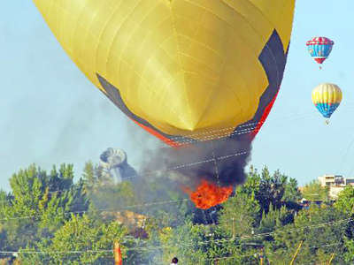

Bem - Vindos
Balão é uma aeronave utilizada no esporte e no lazer, conduzida por pilotos habilitados pela Aeronáutica e que só voam autorizados, sob as normas que regulam o espaço aéreo. Os balões a ar quente não devem ser confundidos com balões de papel, que ameaçam o patrimônio público e particular, são ilegais, causam graves incêndios nas cidades e nas matas.